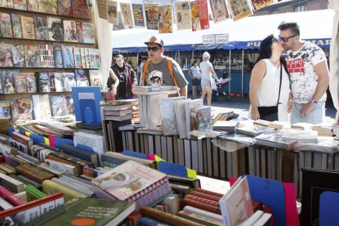

XXXIX Semana Negra

Cultura, Crimen y Literatura a Orillas del Cantábrico
La Semana Negra de Gijón no es solo un festival literario; es una experiencia cultural única en el mundo que transforma la ciudad en un espacio de debate, arte y fiesta popular. Nacida en 1988, se ha consolidado como el evento de referencia para los amantes de la novela negra, la ciencia ficción, la fantasía y el cómic.
Durante diez días, el recinto del festival se convierte en una "ciudad dentro de la ciudad" donde conviven las presentaciones de libros de autores internacionales de primer nivel con ferias de artesanía, puestos de comida, música en directo y las icónicas atracciones de feria. Es el lugar donde la alta cultura sale a la calle para mezclarse con el pulso popular.
En esta edición de 2026, la Semana Negra refuerza su compromiso social con mesas redondas sobre periodismo de investigación, historia y actualidad política, sin olvidar sus prestigiosos galardones como el Premio Hammett a la mejor novela policíaca. Es una cita ineludible para quienes buscan historias que desafíen la realidad bajo el característico ambiente festivo asturiano.